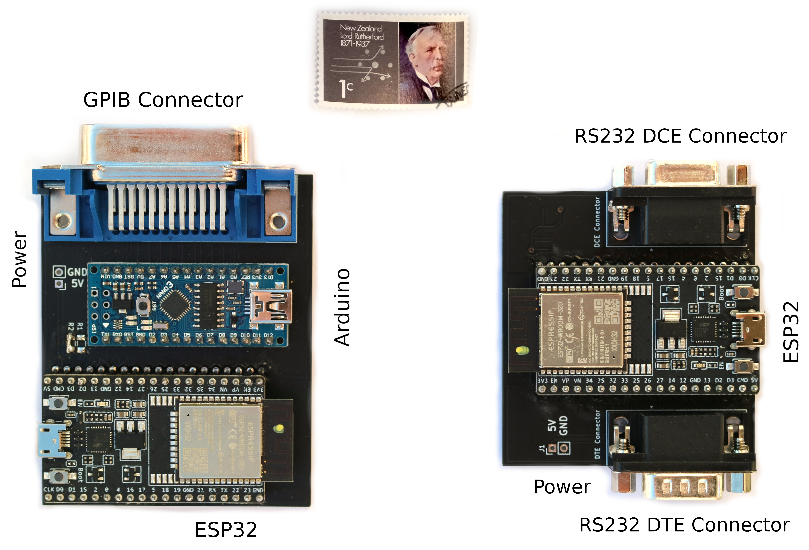

Cold-Atom Engineering and Interacting Collision Resonances

Kjærgaard Lab
Physics, University of Otago
Chin, et al. 10.1103/RevModPhys.82.1225
Vanroose, et al. 10.1088/0305-4470/30/15/034

Monitoring
Annex Lab Intrumentation
Cooling Water
Laser Beat-note
Wavelength Monitoring
Optimisation
Bayesian Optimisation
Gaussian Process

\[\mu(x) = \mathbb{E}\left[ f(x) \right]\] \[\mathcal{K}(x,x') = \mathbb{E}\left[ \big(f(x) - \mu(x)\big)\big(f(x') - \mu(x')\big) \right]\]
Gaussian Process can be defined by sampled data and kernel
\[\mu(x) = \mathcal{K}(x,X)^T(\mathcal{K}(X,X) + I\sigma^2)y\]
\[||x-x'||^2 = \sum_i \alpha_i(x_i - x'_i)^2,\] \begin{align} \mathcal{K}(x,x') &= \sigma^2 \frac{2^{1-\nu}}{\Gamma(\nu)}\left(\sqrt{2\nu}||x-x'||\right)^\nu \\ &\quad\times K_\nu\left(\sqrt{2\nu}||x-x'||\right). \end{align}
Acquision Functions give next trial point.
from skopt import gp_minimize
from skopt.callbacks import CheckpointSaver
checkpoint_saver = CheckpointSaver("./opt_checkpoint.pkl")
return gp_minimize(
run_exp,
[(1,20), (1,20), (1,20), (1,20), (0.01,1), (0.01,1), (0.01,1), (0.01,1)],
x0 = [15, 10, 10, 6, 0.5, 0.15, 0.15, 0.08],
y0 = None,
n_calls=100,
n_random_starts=20,
callback=checkpoint_saver
)
Produces Model of Process

\(S\)-matrix maps in to out
\[\left|\psi_\rm{out}\right> = S \left|\psi_\rm{in}\right>\]
Cross-section is scattering strength
\[\sigma = \frac{4\pi(2\ell + 1)}{k^2}|S_\ell - 1|^2\]
\begin{equation} \left[ -\frac{\hbar^2}{2\mu}\hat{\nabla}^2 + \hat{H}_\text{int} + \hat{V}(\vec{r})\right] \vec{\Psi}(\vec{r}) = E\vec{\Psi}(\vec{r}). \end{equation}
Calculation of wavefunctions
Calculation of wavefunctions
Calculation via log-derivative
Shape Resonance in energy
Feshbach resonances in magnetic field
We have both

Feshbach "Zero-energy" experiments


\[ \begin{pmatrix} f \\ g \end{pmatrix} = \begin{pmatrix} C^{-1} & 0 \\ C \tan \lambda & C \end{pmatrix} \begin{pmatrix} \hat{f} \\ \hat{g} \end{pmatrix} \]
\[ \require{color} \definecolor{PSpink}{rgb}{0.965, 0.129, 0.588} \definecolor{PSblue}{rgb}{0.094, 0.753, 0.769} \begin{pmatrix} f \\ g \end{pmatrix} = \begin{pmatrix} {\color{PSpink}C}^{-1} & 0 \\ {\color{PSpink}C} {\color{PSblue}\tan \lambda} & C \end{pmatrix} \begin{pmatrix} \hat{f} \\ \hat{g} \end{pmatrix} \]
\[ \require{color} \definecolor{PSorange}{rgb}{0.953, 0.565, 0.494} \definecolor{PSpurple}{rgb}{0.635, 0.404, 0.961} \definecolor{PSpink}{rgb}{0.965, 0.129, 0.588} \definecolor{PSblue}{rgb}{0.094, 0.753, 0.769} {\color{PSblue}{\sigma(B, E)}} = \frac{2\pi\hbar}{mE}\sin^2\left( {\color{PSpurple}{\delta_\text{bg}(E)}} + \tan^{-1}\left[\frac{{\color{PSorange}{\Gamma(E)}} / 2}{B - {\color{PSpink}{B_\text{res}(E)}}}\right] \right)\]
Phase Winding
Phase Winding = Shape change
The resonance broadens

\[\Gamma(E) = C^{-2}(E) \bar{\Gamma}_B\]
Enhancement of the short-range wavefunction
\[\Gamma(E) = C^{-2}(E) \bar{\Gamma}_B\]
The resonance shifts

\[B_\text{res}(E) = B_0 + \frac{E}{\delta\mu} - \frac{\bar{\Gamma}_B}{2} \tan\lambda\]
Chin, et al. 10.1103/RevModPhys.82.1225
arXiv:2112.15416

The resonance broadens
\[\Delta\omega_2 \sim \frac{\omega_1^2 - \omega^2}{\left|\omega_1^2 + 2i\gamma_1\omega - \omega^2\right|^2}\]
Pole Dancing
Jost Functions
\[u_\ell(k, r) \sim \frac{\mathrm{i}}{2}\left[\mathscr{F}_\ell(k)\phi_\ell^-(k, r) - \mathscr{F}_\ell(-k)\phi_\ell^+(k, r)\right]\]
Have zeros at (quasi-)bound states.
S-matrix has poles at Jost zeros
\[S_\ell (k) = \frac{\mathcal{F}_\ell(-k)}{\mathcal{F}_\ell(k)}\]
Riemann sheets fold over when moving to energy

| \(\omega < \frac{1}{4}|\gamma_1 - \gamma_2|\) | \(\omega = \frac{1}{4}|\gamma_1 - \gamma_2|\) | \(\omega > \frac{1}{4}|\gamma_1 - \gamma_2|\) |

Future Work
Livi, Catani (2021 Rev. Sci. Inst 92, 094705)
Barret, et al. (2022 Quantum Sci. Technol. 7 025001)
Molecular Collisions
Croft, et al. (2017 Nat. Commun. 8, 15897)